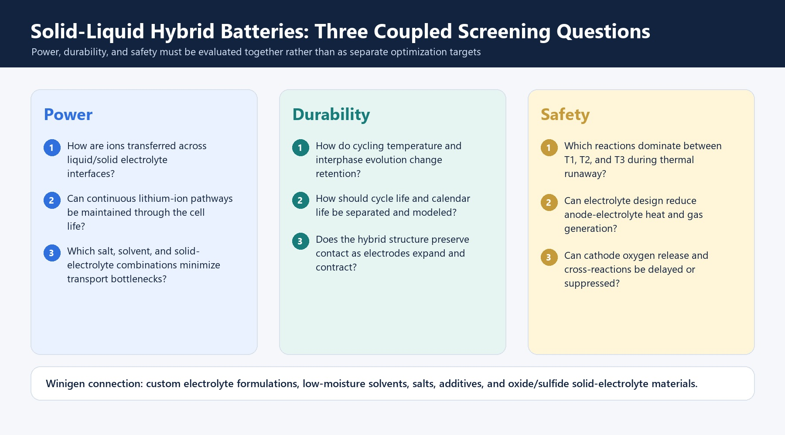
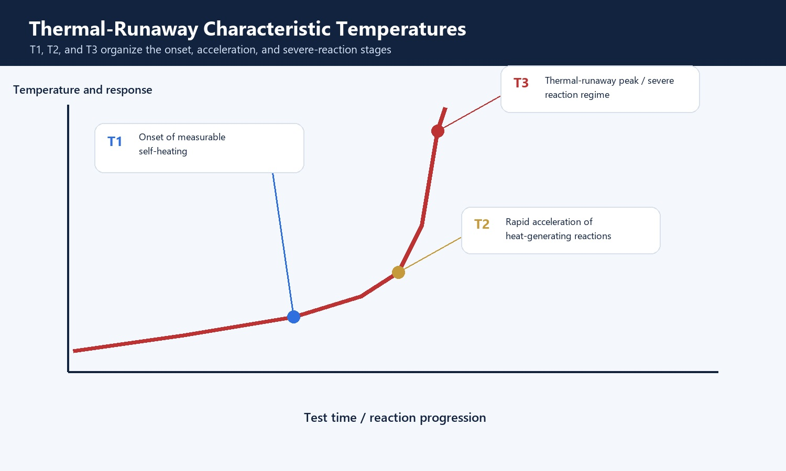

Solid-liquid hybrid and all-solid-state batteries are often grouped together, but they create different transport networks, interface requirements, safety questions, and manufacturing constraints. Hybrid systems retain a liquid or gel phase for wetting and transport, while all-solid-state systems depend on continuous solid-ion pathways, pressure, composite-electrode design, and mechanically stable interfaces.
Why Move Beyond Conventional Liquid Electrolytes
Conventional lithium-ion batteries benefit from mature wet processing, strong electrode wetting, and established carbonate-electrolyte supply chains. Their limitations become more visible when developers push toward lithium metal, high-silicon anodes, high-voltage cathodes, extreme fast charge, or reduced flammable-liquid content.
Solid electrolytes are attractive because they can enable new electrode choices and reduce reliance on volatile organic electrolyte. They do not automatically create a safe or high-energy cell, however. Chemical instability, electronic leakage, fracture, poor contact, and current constriction can still cause failure.

What Is a Solid-Liquid Hybrid Battery?
A hybrid battery contains both liquid and solid ion-conducting components. Depending on the design, the solid phase may act as a separator, coating, scaffold, composite-electrolyte filler, or mechanically stabilizing layer. The remaining liquid can improve pore filling and interfacial contact while preserving compatibility with familiar coating, filling, and formation processes.
The central engineering question is whether the liquid and solid phases form continuous, stable ion-transport pathways. A hybrid cell can lose its advantage if the two electrolytes react, if salt concentration becomes locally nonuniform, or if electrode expansion disrupts the transport network.
What Changes in an All-Solid-State Cell?
An all-solid-state cell removes the conventional liquid electrolyte. Cathodes normally become composites containing active material, solid electrolyte, and often conductive carbon or coating layers. The electrolyte membrane must be thin, dense, ionically conductive, electronically insulating, and mechanically tolerant.
Because solids cannot flow into newly formed gaps, stack pressure, particle size, densification, surface finish, and volume change become first-order design variables. Interface resistance can rise when particles lose contact or when decomposition products form between the electrolyte and electrode.

Material and Process Comparison
| Design area | Solid-liquid hybrid | All-solid-state |
|---|---|---|
| Ion transport | Coupled liquid and solid pathways | Solid electrolyte and composite-electrode percolation |
| Contact | Liquid helps wet pores and interfaces | Pressure, particle packing, and interlayers maintain contact |
| Processing | Can retain more existing lithium-ion operations | Requires electrolyte membranes, dry or specialized slurry processing, and pressure control |
| Key materials | Salts, solvents, additives, ceramic/polymer phases | Sulfide, oxide, or halide electrolytes; coatings; lithium metal or silicon; active materials |
| Primary risks | Phase compatibility, liquid redistribution, gas and interphase growth | Fracture, delamination, electronic leakage, interface decomposition, dendrite penetration |
A Practical Screening Workflow
Begin by defining the target cathode, anode, voltage, temperature range, formation protocol, and cell format. Screen liquid-side properties such as salt solubility, viscosity, water content, and additive behavior alongside solid-side properties such as particle size, ionic and electronic conductivity, phase purity, and moisture sensitivity.
Promising combinations should progress from compatibility soaking and impedance measurements to composite electrodes, symmetric cells, pressure-dependent cycling, and realistic pouch-cell validation. This staged approach separates a promising material combination from a manufacturable battery architecture.
Power: Continuous Ion-Transport Pathways
Liquid phases can wet pores and reduce contact resistance, while solid phases may provide mechanical support, reduce liquid content, or create additional ion-conduction paths. Power capability depends on whether these pathways remain continuous across separators, composite electrodes, and liquid-solid boundaries.
Transport limitations can arise from low salt dissociation, viscous liquid domains, poorly connected ceramic particles, interfacial depletion, or resistive reaction layers. EIS across temperature and state of charge helps separate bulk electrolyte resistance from charge-transfer and contact contributions.
Durability: Cycle Life Is Not Calendar Life
Cycle aging is driven by repeated electrochemical and mechanical change. Calendar aging proceeds during storage and can be accelerated by high state of charge and temperature. Hybrid systems require both measurements because a stable cycling curve does not prove storage stability.
Electrode expansion can break solid pathways while the liquid phase redistributes. Additive depletion, gas generation, salt decomposition, and corrosion can progressively change the balance between phases. Long-duration impedance and swelling measurements are therefore as useful as capacity retention.
Safety: Follow the Reaction Sequence
Thermal runaway is not a single reaction. Early self-heating can involve unstable interphases and reactions between lithiated anodes and electrolyte. At higher temperatures, separator failure, cathode oxygen release, electrolyte oxidation, and internal shorting can accelerate heat generation.
Adding a solid phase may reduce flammable-liquid content, but it does not remove stored electrochemical energy or guarantee benign interfaces. Hybrid designs should be tested using calorimetry, gas analysis, abuse testing, and post-mortem characterization appropriate to the target cell format.
Recommended Screening Matrix
| Question | Useful tests |
|---|---|
| Is transport continuous? | EIS versus temperature/SOC, rate capability, transference behavior, cross-section imaging |
| Are phases chemically compatible? | Soak tests, XPS/XRD, gas analysis, storage impedance |
| Does contact survive cycling? | Pressure-dependent cycling, thickness/swelling, post-mortem microscopy |
| Is the formulation thermally stable? | DSC/ARC, gas composition, hot-box and controlled abuse tests |
| Does performance transfer to cold conditions? | Cold discharge, cold charge acceptance, recovery, plating diagnostics |
How Winigen Materials Connects the Variables
Hybrid development can require simultaneous changes to lithium salt, solvent blend, additive package, ceramic electrolyte, and formation protocol. Winigen's portfolio allows teams to screen low-moisture solvents, LiPF6/LiFSI/LiTFSI strategies, SEI/CEI additives, and oxide or sulfide solid electrolyte materials within one development framework.


References
- Janek and Zeier, A solid future for battery development, Nature Energy 1, 16141 (2016).
- Famprikis et al., Fundamentals of inorganic solid-state electrolytes for batteries, Nature Materials 18, 1278-1291 (2019).
- Banerjee et al., Interfaces and Interphases in All-Solid-State Batteries with Inorganic Solid Electrolytes, Chemical Reviews 120, 6878-6933 (2020).
- Randau et al., Benchmarking the performance of all-solid-state lithium batteries, Nature Energy 5, 259-270 (2020).
- Finegan et al., In-operando high-speed tomography of lithium-ion batteries during thermal runaway, Nature Communications 6, 6924 (2015).
- Spotnitz and Franklin, Abuse behavior of high-power, lithium-ion cells, Journal of Power Sources 113, 81-100 (2003).
- Verduzco et al., Hybrid polymer-garnet materials for all-solid-state energy storage devices, Journal of Materials Research 36, 1845-1864 (2021).
Discuss Your Material Screening Program
Winigen Materials supports liquid, solid-liquid hybrid, and solid-state screening with battery-grade salts, low-moisture solvents, additives, sulfide/oxide/halide solid electrolytes, and formulation support.
Contact Winigen MaterialsAll original diagrams on this page are © Winigen Materials unless otherwise noted. They may not be reproduced, modified, or redistributed without permission.